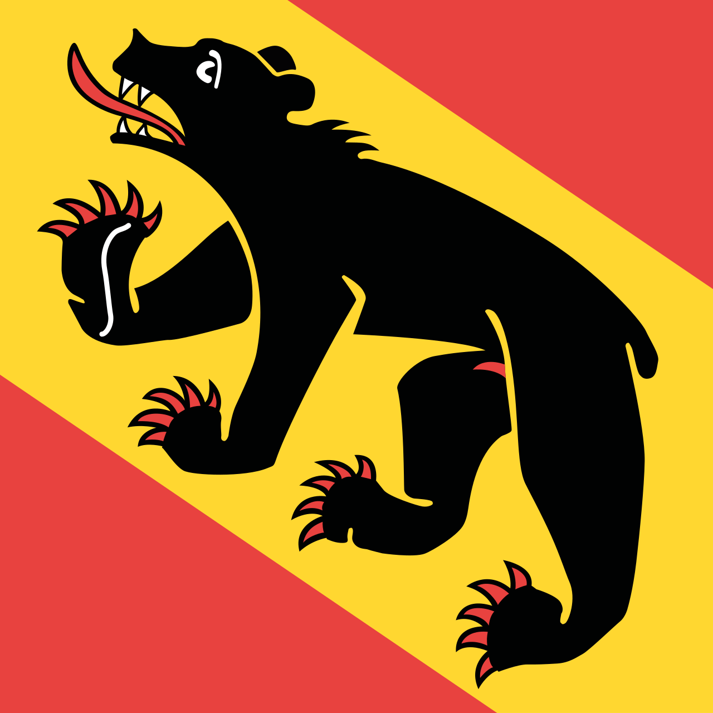

Wanderung zur Froburg
Gemeinsamer Aufstieg mit anschliessendem Nachtessen.
Semesterprogramm der Aktivitas, gemeinsame Verbindungsanlässe und regelmässige Treffen der Alt-Froburger.
Semesterprogramm
September-November 2026
Gemeinsamer Aufstieg mit anschliessendem Nachtessen.
Fachreferat mit Diskussion und anschliessendem Apéro.
Festlicher Höhepunkt des Verbindungsjahres für Aktivitas und Alt-Froburger.
1 Anlass in diesem Monat.
Abonniere das Semesterprogramm und verpasse keinen Anlass mehr der AV Froburger.
Alt-Froburger
Die Alt-Froburger treffen sich regelmässig an ihren regionalen Stämmen in Basel, Bern und Luzern.
Kanton Basel-Stadt
Infos bei AF Schnoog
Infos bei AF Cri
Kanton Bern

Infos bei AF Repro
Kanton Luzern
Mit Berchtoldia, Fryburgia, Welfen und Neu-Welfen
Infos bei AF Orakel
Infos bei AF Orakel